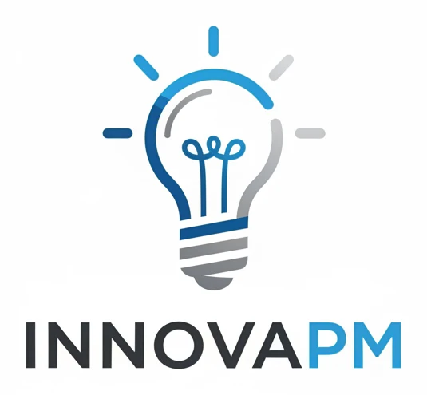

01DŹWIĘK
Radio i audio
Buduj rozpoznawalność w codziennym rytmie słuchaczy — w mieście, regionie lub całej Polsce.
Także ESKA2 i ESKA ROCK
Poznaj ofertę radia ZPR
kampanie cross-mediaINNOVAPM / KAMPANIE CROSS-MEDIA
Radio, portale, social media, prasa i projekty specjalne ZPR. Pomogę dobrać kanały do Twojego celu, odbiorców i budżetu — lokalnie lub w całej Polsce.
Twoja marka.
W codziennym rytmie odbiorców.
Artykuły premium · display · wideo
Wybrane marki z portfolio Grupy ZPR Media. Kliknij logo, aby poznać medium.
Prawa do marek i znaków przysługują właściwym spółkom z Grupy ZPR Media. Kontakt: Grupa ZPR Media, ul. Jubilerska 10, 04-190 Warszawa, +48 22 51 59 001, +48 22 51 64 700.
KANAŁY I FORMY REKLAMY
Cel, odbiorcy i budżet wyznaczają dobór mediów. Oto możliwości, które możemy połączyć w Twojej kampanii.
Buduj rozpoznawalność w codziennym rytmie słuchaczy — w mieście, regionie lub całej Polsce.
Także ESKA2 i ESKA ROCK
Poznaj ofertę radia ZPRDocieraj do odbiorców tam, gdzie szukają informacji, inspiracji i odpowiedzi.
Serwisy informacyjne, rozrywkowe i tematyczne
Poznaj ofertę internetu ZPRRozwijaj historię marki w formatach dopasowanych do sposobu korzystania z mediów.
Profile i formaty dobierane do kampanii
Poznaj możliwości digital ZPRUmieść przekaz w kontekście zainteresowań czytelnika — od informacji po budowę i architekturę.
Także Architektura-murator ↗
Poznaj ofertę prasy ZPROpowiedz więcej niż mieści się w spocie. Dobierz formę i produkcję do tematu oraz odbiorcy.
Kreacja, produkcja i dystrybucja — według briefu
Poznaj możliwości produkcji ZPRPołącz obecność w mediach z bezpośrednim doświadczeniem marki i spotkaniem z odbiorcami.
Zakres i udział marek potwierdzane indywidualnie
Poznaj projekty specjalne ZPRDostępność marek, formatów, terminów i warunki emisji potwierdzamy przy przygotowaniu konkretnej oferty.
OD CELU DO KAMPANII
Trzy przykładowe punkty wyjścia. Finalny zestaw kanałów dobierzemy po rozmowie.
Otwarcie lokalizacji lub wsparcie ruchu w istniejącym punkcie.
Premiera produktu, wejście na rynek lub budowanie znajomości marki.
Dotarcie do odbiorców o określonych zainteresowaniach lub potrzebach branżowych.
JAK PRACUJEMY
InnovaPM pomaga określić potrzeby, dobrać rozwiązania i prowadzi kontakt dotyczący oferty. Warunki, dostępność oraz odpowiedzialności ustalamy przed realizacją.
Ustalamy odbiorców, obszar, termin i orientacyjny budżet.
Rekomendujemy media i formaty odpowiadające celowi kampanii.
Uzgadniamy dostępność, wycenę, materiały i zakres realizacji.
Realizacja przebiega według uzgodnionego zakresu i sposobu raportowania.
DOBRZE WIEDZIEĆ
Nie masz jeszcze gotowego briefu? Wystarczy cel i kilka informacji o firmie.
Tak. Oferta radiowa ZPR obejmuje kampanie lokalne, regionalne i ogólnopolskie. Dostępność konkretnych stacji i uzupełniających formatów sprawdzimy dla wskazanego obszaru.
Budżet zależy od zasięgu, czasu emisji, formatów i produkcji materiałów. Podaj orientacyjną kwotę albo wybierz „Do ustalenia”. Wycena powstaje po doprecyzowaniu briefu.
Nie. Możemy uwzględnić potrzebę kreacji i produkcji w zapytaniu. Ich zakres, terminy i koszty zostaną wskazane w ofercie.
Podaj planowaną datę startu. Potrzebny czas zależy od dostępności emisji i przygotowania materiałów; projekty specjalne zwykle wymagają szerszych uzgodnień. Termin potwierdzimy w ofercie.
Tak. Cross-media jest możliwością, a nie obowiązkiem. Rekomendacja może obejmować pojedynczy kanał, jeżeli odpowiada Twojemu celowi.
Twoim kontaktem w InnovaPM jest Krzysztof Fiedorowicz. Pomagam doprecyzować potrzeby i rekomendację. Finalne warunki mediowe, dostępność, wykonawcy i odpowiedzialności wymagają indywidualnego potwierdzenia.
TWÓJ KOLEJNY KROK
Wypełnij krótki formularz. Wrócę z pytaniami uzupełniającymi lub propozycją rozmowy o kampanii.